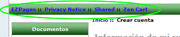

GPL Licence
Collator-Translator-Maintainer: torvista
Any language pack requires a lot of work to create and maintain.
If you find this language pack useful please give something back to the community like improvements or translate these instructions or the "tu" files or answer other user's questions in the forums...
Zen Cart Support Thread: http://www.zen-cart.com/showthread.php?193098-Spanish-Language-Pack
Download from Zen Cart
This version is updated "when necessary" (eg. for a Zen Cart version update or a bug fix):
http://www.zen-cart.com/downloads.php?do=file&id=1110
Download from Sourceforge
Project Summary Page:
https://sourceforge.net/projects/zencartspanish
Minor changes are uploaded continually here, but the downloadable .zip is not updated so often.
A snapshot of the current files can be obtained here:
http://zencartspanish.svn.sourceforge.net/viewvc/zencartspanish/?view=tar
As always, install and install any modifications on a development site, NEVER on your production site.
IMPORTANT FOR Zen Cart 1.54 only:
it is ESSENTIAL to make this bug correction BEFORE installing ANY additional languages:
http://www.zen-cart.com/showthread.php?215694-Known-Bugs-%28and-fixes%29-with-v1-5-4&p=1269563#post1269563
a) The fileset is encoded in utf-8 as Zen Cart uses utf-8 encoding from v1.5 onwards.
So if you are using a new installation of Zen Cart 1.51 onwards you should have no problem.
If you have an older site that still uses latin-1/8859 for the database contents/connection and html page encoding either you have to convert the database to utf-8 or convert the language files to 8859. This will be difficult as there are various free programs available for bulk 8859->utf-8 recoding but not utf-8->8859.
I recommend you upgrade the database to utf-8. There are multiple threads on this subject in the Zen Cart forum but as of 2012-12 no script has yet been confirmed by the Zen Cart team as being 100% risk-free.
If you do not have a customised template or have been modifying the "classic" template: STOP NOW, create your own template and restore the "classic" files to their original states.
The "classic" template should be left untouched to help investigate/isolate any problems you create/introduce into the code with your customised template files.
If you have not installed the Backup MYSQL Plugin to provide easy database backups, do it now.
http://www.zen-cart.com/downloads.php?do=file&id=7
Use only the "files_usted" directory ("files_tu" has not been translated).
Click on "new language" and fill in the fields:
Name: This is a text field so can be anything eg: Español/Spanish/Castellano. It can be changed anytime.
Code: es
Directory: spanish
Sort Order: Optional. The display order of the language selection drop-down in the admin menu and the display order of the flags in the shop front.
Set as default: tick if you want the admin to display in spanish when you login.
Click on "Insert".
If you get any warnings at this point MAKE A NOTE OF THEM/ take a screenshot and fix the problem: Google is your friend.
Note that the text of the options of configuration settings can be stored in the database in one language only, and so are only available in english.
Note that the sidebox to display the available languages is not enabled by default.
Enable it in Tools->Layout Boxes Controller
These are not multi-language in a new Zen Cart installation: you have to install a plugin.
So this is correct:

Copy the new files from the development to the production site and repeat step 3)
If any text is untranslated/incorrect or could be improved post a message in the forum thread.
If you see a constant definition appear like TEXT_CUSTOM_ENTRY which shows the english text when english language is selected but the constant name when spanish is selected, first check that this define is not something that is part of a plugin you have added and so does not normally exist in a new Zen Cart installation (english) nor the spanish fileset.If you get white pages: check the debug log in the /logs (post Zen Cart 1.51) or /cache ( pre Zen Cart 1.51) directory and use this page to help you locate the fault: http://www.zen-cart.com/content.php?124-blank-page.
The buttons were created with the Zen Button Construction Kit:
http://www.zen-cart.com/downloads.php?do=file&id=520
Please help to maintain and improve this translation by sending comments and corrections in the forum:
http://www.zen-cart.com/showthread.php?193098-Spanish-Language-Pack
A translation of this readme file would also be welcome!
I decided not to do this as due to the almost total absence of spanish community-support for Zen Cart spanish-speaking users, anyone using Zen Cart will have to get used to reading english....starting with the installation.
If you find the install too difficult without it being in spanish, then working with and customising Zen Cart will not be for you, give up now or start a spanish forum.